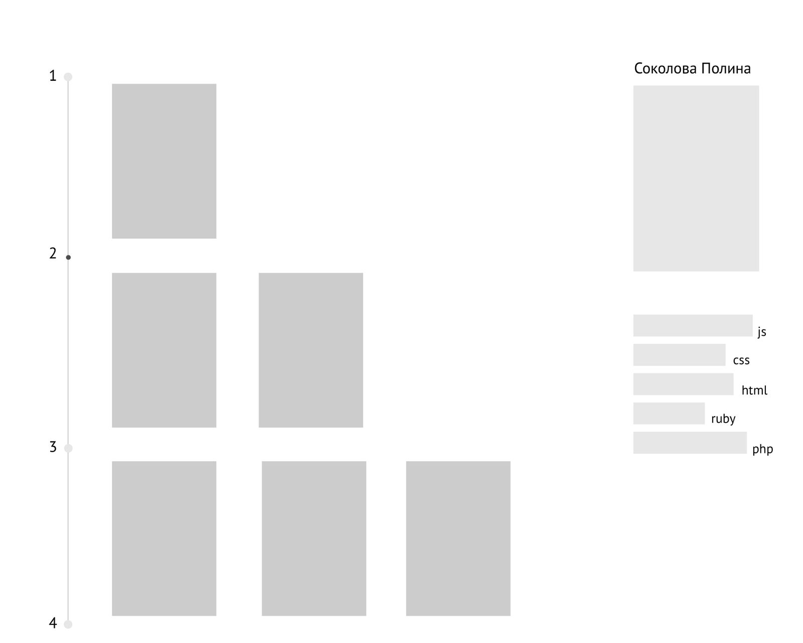
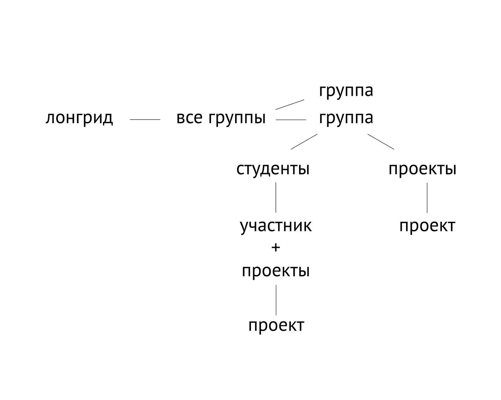
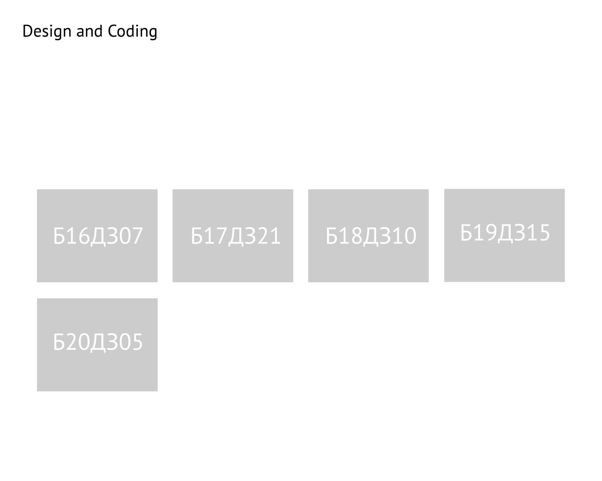
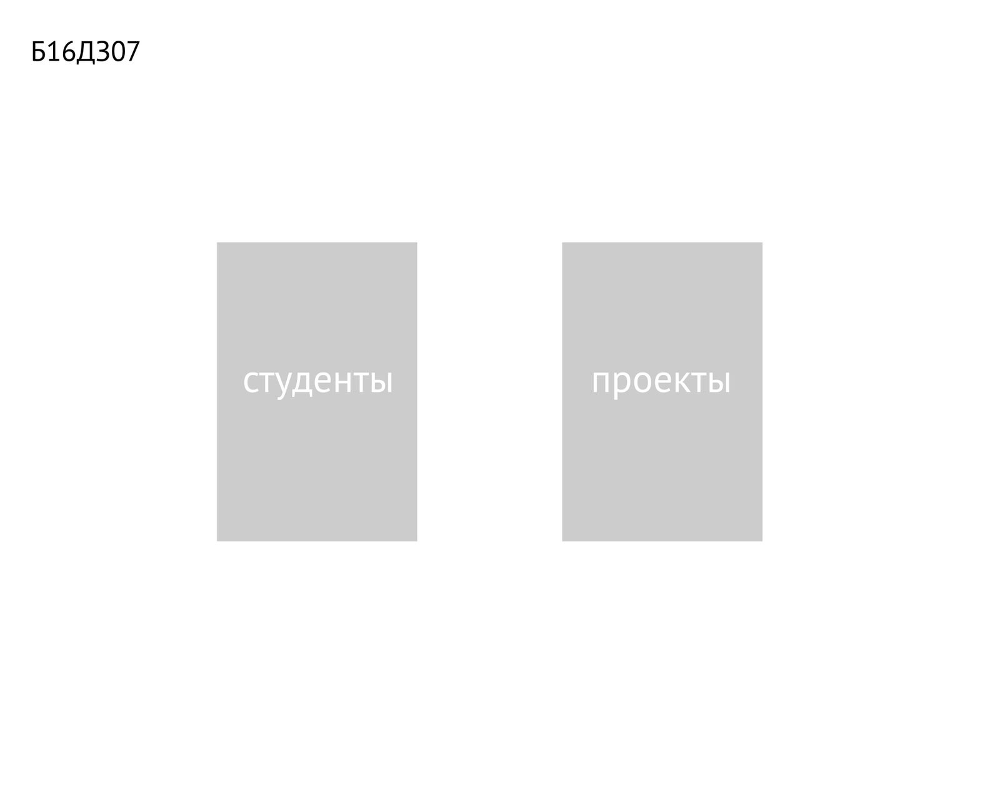
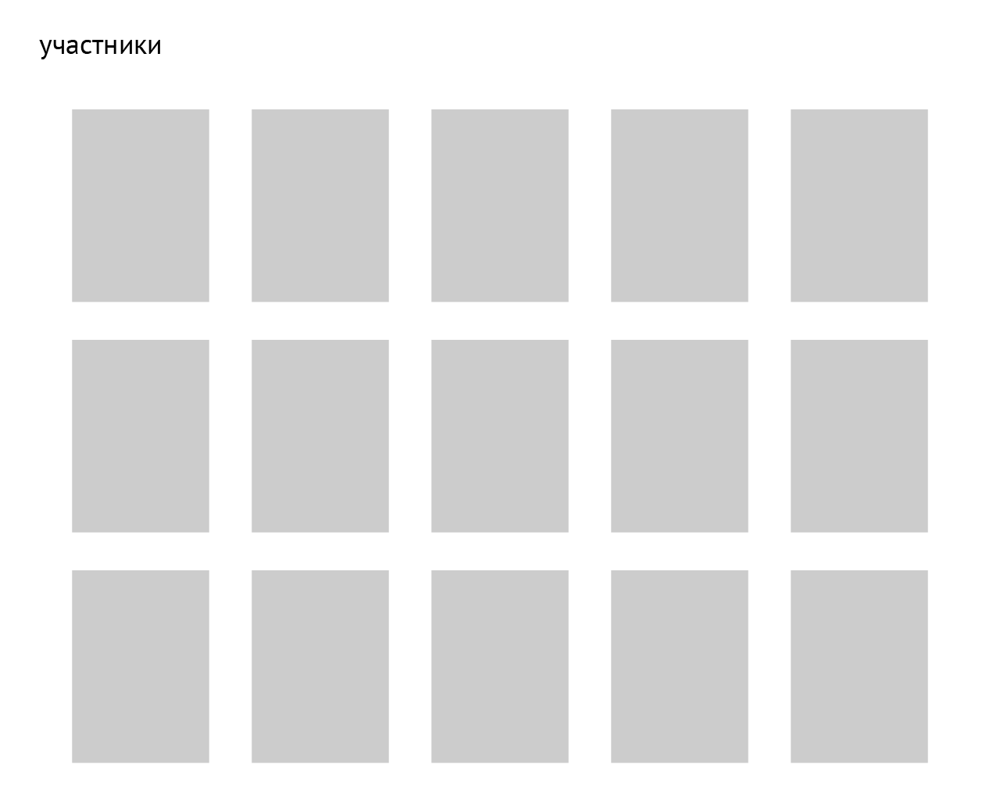
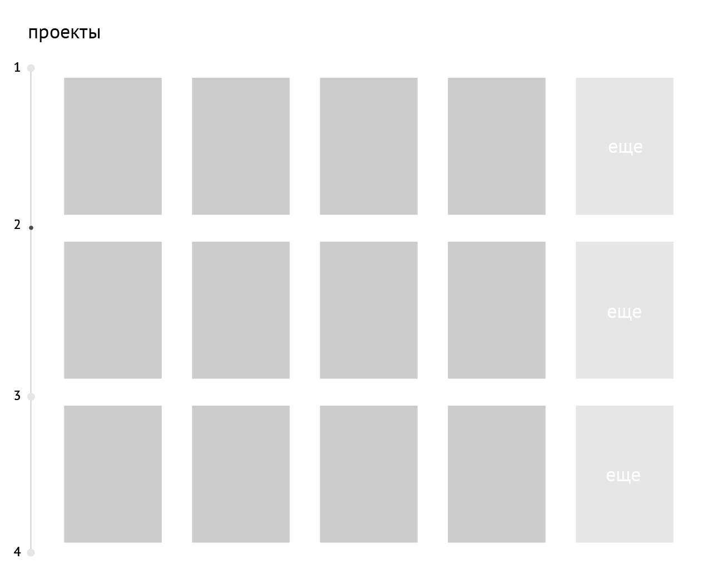

Design and coding
Сайт-портфолио, представляющий работы групп студентов направления дизайн и программирования.
Проблема
В настоящее время существует проблема, связанная с тем, что у групп направления дизайн и программирование нет сайта, где были бы собраны все их работы, созданные в рамках обучения в школе дизайна. Это, помимо того, что не отображает хронологию развития каждого студента, не дает возможности абитуриентам составить представление о том, чему обучают по данному направлению и что будет знать на выходе выпускник. Помимо прочего, работодатели нуждаются в дизайнерах, которые будут понимать принцип работы с кодом, однако, на данный момент нет подобного сайта, где сконцентрированы такие.
Целевая аудитория
Решение
Сайт будет содержать в себе две главные составляющие: это отображение всех студентов курса профиля "Дизайн и программирование", а также, непосредственно, их проектов. Так как обучение длится несколько лет, вся информация будет отображаться в хронологическом порядке. Это поможет проследить не только прогресс каждого из студентов, но и то, как менялись группы (кто приходил, уходил, проектное взаимодействие). Создание данного проекта даст возможность студентам хранить все институтские проекты в одном месте, не теряя какие-то из них, а абитуриентам – создавать представление о специфике направления. Более того, проект будет являться своеобразным порфтолио, благодаря которому работодатели смогут найти подходящего дизайнера-программиста среди студентов, опираясь на его навыки и умения.
Общая структура проекта
Вся общая информация будет заносится администратором сайта. Но у студентов также будет доступ к своим страничкам, где они могут составлять и редактировать свои проекты в виде лэндинга.
Макеты
   Риски
Нам кажется, что на данный момент рисков, причин, почему проект может не состояться, нет. Единственное, что от нас требуется, это быть максимально включенными в работу полноценно, вдвоем, к чему мы и готовы. Также могут быть проблемы при отснятии людей, если тогда, когда мы будем бронировать студию, найдутся люди, которые не смогут прийти. Но это решаемый индивидуально с каждым вопрос.
Команда
Катя Федичкина и Вика Чекалина. Обе мы хотим прокачаться и в фронт- и в бэкэнде.